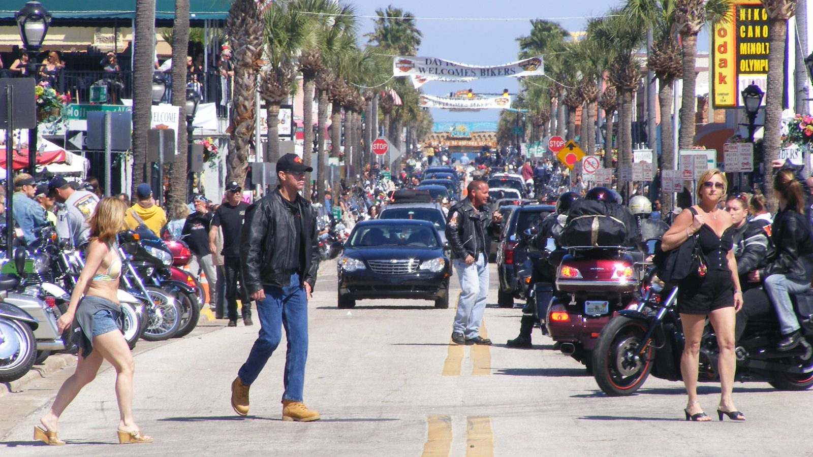
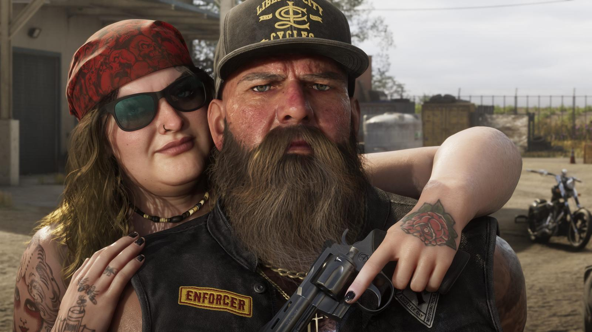

Байкеры Амброзии и Байк-неделя Дейтоны
Опубликовано:
Флорида — одна из байкерских столиц США, и Rockstar это показала. Конкретного клуба-прототипа студия не называла.


- В Амброзии, по описанию Rockstar, хозяйничают местные байкеры.
- На кадрах — жилеты с нашивками, как у реальных мотоклубов.
- Daytona Bike Week ведёт историю с 1937 года и собирает больше 400 000 человек.
- Осенью в Дейтоне есть второй слёт — Biketoberfest.
Что в игре
На официальном кадре по главной улице Амброзии едет колонна мотоциклов. На другом — байкер с седой бородой и нашивкой ENFORCER на жилете и его подруга с револьвером. Нашивки с ролью в клубе — реальная традиция мотоклубов.

Что в реальности
Daytona Beach Bike Week начиналась 24 января 1937 года как гонка Daytona 200 по трассе из пляжа и шоссе длиной 5,1 км. Победил Эд Кретц на мотоцикле Indian со средней скоростью 118 км/ч. После войны гонку возродил Билл Франс-старший, будущий основатель NASCAR, и вокруг неё вырос фестиваль. Сегодня это 10 дней в начале марта и больше 400 000 гостей.
Во Флориде два больших байкерских слёта в год, и оба в одном городе. Кроме мартовской Bike Week с 1991 года в Дейтоне проходит Biketoberfest — в октябре, в выходные после Дня Колумба.
Совпадает и отличается
| Флорида | Амброзия | |
|---|---|---|
| Колонны мотоциклов | Да | 🟢 Да |
| Нашивки с ролью в клубе | Традиция мотоклубов | 🟢 ENFORCER |
| Фестиваль байкеров | Bike Week, Biketoberfest | Узнаем в игре |
| Название клуба | Реальные клубы | 🔵 Своё |
Источники: Rockstar Games (кадры Ambrosia); Daytona Beach Bike Week — история события; Daytona 200 (1937).
Реальные фото: Фото: Gamweb, CC BY-SA 3.0 · Wikimedia Commons. Кадры игры: Rockstar Games.
Разборы кадров, слухи и факты за 30 секунд. Подписывайтесь:
YouTubeInstagramTikTok
 vs
vs
 vs
vs
 vs
vs